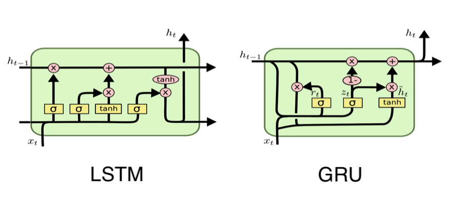

最开始接触《诛仙》这本小说，大概是我还在念初中那会儿。仍记得是我的一位朋友在图书馆里给我推荐了这本书。当我翻开那本在图书馆里已被无数人阅过显破旧的书，仅仅看了几章，就立即被这本小说的情节所吸引。作为一本玄幻小说，萧鼎凭借他那天马行空的想象力，优美极了的文笔，让我从此爱不释手。一口气将当时已经出来了的前四部看完了，并每次都在第一时间将刷完后面的书。
多年之后，又出了多款基于诛仙的网游，手游，甚至也被翻拍成了由李易峰和杨雪主演的电视剧。对于这些诛仙衍生品，我也依然是他们的忠实粉丝，即使是非常简单的游戏，也会忍不住想去玩上一玩。就算是改编的电视剧《诛仙 青云志》的剧情实在不忍吐槽（很想把编剧拉出来打一顿），出于对萧鼎大作的喜爱，我也还是边看边骂的强忍着将整部剧看完了。
Motivation
随着坠入魔道的鬼王被张小凡打败，《诛仙》也走向了完结。当年的我，恋恋不舍的合上书本，叹到不知何时才能再遇到这么吸引我的小说了。
一阵轻风吹过，屋檐下的铃铛迎风而响，绿色的衣角轻轻飘起，仿佛也带着几分笑意；清脆的铃声，随着风儿飘然而上，回荡在天地之间。最近开始了对 NLP 的学习和研究，其中就涉及到了一个重要的领域：Text Generation。说的是如何利用深度学习的方法，来进行文本生成。于是我立刻就想到，何不利用所学的知识，来进行《诛仙》续集的生成呢？完成少年时的梦想呢。
于是，说做就做，开始了拿 TensorFlow 进行诛仙续集生成的训练了.
Model Selection
要完成续集，首先，我们需要做的是定义文本生成的训练模型。
基于深度学习的文本生成模型，最 natural 的方法，就是利用循环神经网络 RNN 了。RNN 模型，简单来说，就是循环的将前面的信号，和当前单位的输入信号进行综合处理，并将最后的输出信号传入下一个单位。如此循环往复，就可以一直传，一直传下去啦。
哈哈，是不是有点点抽象，没事儿，来看个图吧。

左边的是我们常用的表示 RNN 的方法，看上去是不是像自己传值给自己呢。但其实我们打开这个模型，就会发现，它实际上是一个时序的模型。上一个时间段的输入，平行传入当前神经元，加上当前的输入，我们利用以一些权值矩阵，激励函数，在那个神经元里面偷偷摸摸的 hia hia 干些不能见人的事情了。。。哈哈，不是啦，干一些矩阵的乘法和加法，然后拿着激励函数吧唧一下，最后将得到的结果，或者直接输出，并传入到下一个神经元中。
这种时序的模型，和我们自然语言处理的句子，有着异曲同工的相似之处，我们可以将自然语言的一个句子看成是一个一个的单词串联起来的。每个单词单独作为一个输入，并传入到下一个单词所对应的神经元中。
那既然 RNN 模型这么好，我们是不是就要拿着它来搞来搞去了呢？
No No No... 没那么简单啦，因为 RNN 存在着几个变种，而它的那几个变种，有着比最基本的 RNN 更好的训练效果。其中最有名也最常用的两种 RNN 神经元是：
- LSTM : Long Short-Term Memory
- GRU : Gated Recurrent Unit
我们接着来看一张图，里面介绍了在这两种神经元的黑箱子里面，究竟都发生了些神马。
噢，我的天哪，好复杂，这些圈圈线线的是啥，还有这些符号，都是什么鬼。呐，我也不能靠几个简单的句子给说清楚，那就扔几个链接吧，那里的人讲的非常仔细，当然呐，前提是你得看的懂英文哈。了解 LSTM 点这里，GRU 讲的比较清楚的我没找到，欢迎大家给我发个链接过来。
尽管我们没有做详细的介绍这两种模型，但是我们简单提及一下他们的不同。
- LSTM 中一共有三道门（Gate），分别是遗忘门，输入门和输出门。而在 GRU 中只有两道门：重置门和更新门。所以从计算量上来讲，LSTM 的计算量略微的比 GRU 要大，速度也会慢一些。当然啦，Basic RNN 由于模型最简单，训练起来也是最快的了。
- 绝大多数的情况下，两种模型谁好谁坏，并没有一个定论，往往我们都是在实际问题中进行尝试，哪个好用哪个。
通过我的实验，我发现 LSTM 模型生成出来的结果比较能看，于是就选择了 LSTM 作为这一次的 Text Generation 的神经元。
A famous joke in Deep Learning: You can always get best result using LSTMs.Load Dataset
好啦，咱们现在开始正式的进入处理阶段了。
# Import Libraries
import tensorflow as tf
import os
from six.moves import cPickle
import collections
import codecs
import numpy as np
import jieba接下来，我们需要导入数据，我在网上下载了一个 诛仙 小说全集的txt文件。如果有触犯版权问题，希望各大佬看在我这个诛仙脑残狂热粉的份上，放过我吧。而且我只是用来做科研用途，并未商用，真哒。
# Load the book as a string
FILE_PATH = './data/诛仙.txt'
# Raw corpus of the book
corpus_raw = u""
with codecs.open(FILE_PATH, 'r', 'utf-8') as book_file:
corpus_raw += book_file.read()
print("Corpus is {} characters long".format(len(corpus_raw)))Chinese Segmentation
由于我们处理的是中文的文本，而中文的单词不是一个一个的汉字，中文句子的最小单位是多个汉字组成的词语，所以第一步，我们要做的就是“中文分词”。
# Whether or not use Chinese split words, if false, use single chars to feed
USE_SPLIT = True分词的算法现在已经非常的成熟了，像基于贪心算法的双向最长词匹配算法，到后来的 HMM 和 CRF 算法。甚至是加上类似运用了 Bi-RNN 的深度学习方法。目前，中文的分词的准确率已经能够得到 98% 以上了。所以没必要在这个上面花很多的功夫来提升生成文本的结果了。
并且有一些开源的中文分词库，我们也可以直接拿来用，比如 jieba 分词，HanLP 等等。没有必要去重复这些已经很成熟的东西，所以我直接拿 jieba 来分词了，简单，快速，而且好用。开源万岁！！
# Create lookup tables
def create_lookup_tables(text, use_split=USE_SPLIT):
"""
Create lookup tables for vocab
:param text : Whether or not use chinese segmentation
:param use_split : The corpus text to be split into words
:return: A tuple of dicts (vocab_to_int, int_to_vocab, text_index)
"""
words = list(jieba.cut(text)) if use_split else list(text)
vocab = set(words) if use_split else set(text)
int_to_vocab = {key: word for key, word in enumerate(vocab)}
vocab_to_int = {word: key for key, word in enumerate(vocab)}
if use_split:
text_index = [vocab_to_int[word] for word in words]
else:
text_index = [vocab_to_int[word] for word in text]
return vocab_to_int, int_to_vocab, text_index
vocab_to_int, int_to_vocab, corpus_int = create_lookup_tables(corpus_raw)
print("Vocabulary size : {}, number of Chinese words in text : {}" \
.format(len(corpus_int), len(vocab_to_int)))Build Network
终于到了最最最最最重要的环节啦，终于要构建我们的神经网络啦啦啦啦！
# Hyperparameters
num_epochs = 400 """ 将诛仙从头到尾训练多少遍 """
batch_size = 512 """ 每次训练 feed 的 batch 大小 """
rnn_size = 128 """ RNN Cell 的 Hidden Units 的大小 """
num_layers = 2 """ RNN 的层数 """
keep_prob = 0.7 """ Dropout 的保留率 """
embed_dim = 128 """ 词向量的维度，这个要和 RNN Hidden Units 的大小一致 """
seq_length = 30 """ Sequence 的长度 """
learning_rate = 0.001 """ 学习率 """
save_dir = './save' """ 保存模型的位置 """咦，这是什么鬼。我裤子都脱了，你就给我看一大堆参数。说好的模型呢？神经网络呢？
不要着急，这些是我们在训练神经网络的时候的一些可以调整的参数，我们将它单独提取出来，这样，在将来就不需要到程序的代码里面到处找他们来修改啦。
这些参数对最终的结果都有着影响，有一些很显然就可以看出来的，比如训练次数等等。有一些参数的设置比较 tricky，像 sequence length 和 rnn size 的设置。往往我们认为 sequence 越长，最前面的信息就越难保留到末尾，如果想要让信息尽可能的传递到最终，我们则需要将 rnn size 设置的大一点。
接下来，进入正题，构建我们的神经网络。
# TensorFlow Train Graph
train_graph = tf.Graph()
with train_graph.as_default():
# Initialize input placeholders
input_text = tf.placeholder(tf.int32, [None, None], name='input')
targets = tf.placeholder(tf.int32, [None, None], name='targets')
lr = tf.placeholder(tf.float32, name='learning_rate')
# Calculate text attributes
vocab_size = len(int_to_vocab)
input_text_shape = tf.shape(input_text)
# Build the RNN cell
lstm = tf.contrib.rnn.BasicLSTMCell(num_units=rnn_size)
drop_cell = tf.contrib.rnn.DropoutWrapper(lstm, output_keep_prob=keep_prob)
cell = tf.contrib.rnn.MultiRNNCell([drop_cell] * num_layers)
# Set the initial state
initial_state = cell.zero_state(input_text_shape[0], tf.float32)
initial_state = tf.identity(initial_state, name='initial_state')
# Create word embedding as input to RNN
embed = tf.contrib.layers.embed_sequence(input_text, vocab_size, embed_dim)
# Build RNN
outputs, final_state = tf.nn.dynamic_rnn(cell, embed, dtype=tf.float32)
final_state = tf.identity(final_state, name='final_state')
# Take RNN output and make logits
logits = tf.contrib.layers.fully_connected(outputs, vocab_size, activation_fn=None)
# Calculate the probability of generating each word
probs = tf.nn.softmax(logits, name='probs')
# Define loss function
cost = tf.contrib.seq2seq.sequence_loss(
logits,
targets,
tf.ones([input_text_shape[0], input_text_shape[1]])
)
# Learning rate optimizer
optimizer = tf.train.AdamOptimizer(learning_rate)
# Gradient clipping to avoid exploding gradients
gradients = optimizer.compute_gradients(cost)
capped_gradients = [(tf.clip_by_value(grad, -1., 1.), value) for grad, value in gradients if grad is not None]
train_op = optimizer.apply_gradients(capped_gradients)
这段代码看上去有一点点长哈，会不会看上去有一点吃力，没关系，我们来分段讲解一下主要部分的代码。
============
""" Part of Code """
# Build the RNN cell
lstm = tf.contrib.rnn.BasicLSTMCell(num_units=rnn_size)
drop_cell = tf.contrib.rnn.DropoutWrapper(lstm, output_keep_prob=keep_prob)
cell = tf.contrib.rnn.MultiRNNCell([drop_cell] * num_layers)
============上面这一段代码，主要是为了构建了一个多层的，带有 dropout 的复合 LSTM 神经元。Dropout 能有效的防止过拟合，而多层的神经元，能学到更多的东西。这个神经元将作为我们神经网络的基本单位，来组成庞大的神经网络。
============
""" Part of Code """
# Set the initial state
initial_state = cell.zero_state(input_text_shape[0], tf.float32)
initial_state = tf.identity(initial_state, name='initial_state')
# Create word embedding as input to RNN
embed = tf.contrib.layers.embed_sequence(input_text, vocab_size, embed_dim)
# Build RNN
outputs, final_state = tf.nn.dynamic_rnn(cell, embed, dtype=tf.float32)
final_state = tf.identity(final_state, name='final_state')
============上面这一段代码，展示了如何构建神经网络。
我们知道 RNN 是一个连续的神经网络，是前面一个 Cell 的状态向着下一个 Cell 进行着状态传递，所以理论上来说，它是没有头，也没有尾的。但是实际中，我们需要给它一个初始状态，这样它才能进行着传递。着就是第一部分代码的意思，我给它一个初始值全部为0的一个初始状态，用作我们的起始。
接下来，我们将文本输入，首先通过一个 embedding 层，将离散的单词对应成向量，用 dynamic_rnn 来计算通过了这次连续的传递值之后，得到最终的状态和输出。
============
""" Part of Code """
# Take RNN output and make logits
logits = tf.contrib.layers.fully_connected(outputs, vocab_size, activation_fn=None)
# Calculate the probability of generating each word
probs = tf.nn.softmax(logits, name='probs')
# Define loss function
cost = tf.contrib.seq2seq.sequence_loss(
logits,
targets,
tf.ones([input_text_shape[0], input_text_shape[1]])
)
============上面这一段代码，解释了如何计算我们的 cost ，我们知道 RNN 是一个序列的神经网络模型，在序列的每一个节点上都有输出，我们的 outputs 就是对应着的在每个节点的输出的组合。接下来，我们用一个全连接层，将输出映射到一个有我们词汇量大小的输出层上，这一步即是推测我们预测的单词到底是谁，这个输出的理想情况当然就是单词的 one hot vector 了，当然，这个是不可能达到的，所以，我们就由此定义了 loss，即是我们要它离 one hot vector 越来越近。
============
""" Part of Code """
# Learning rate & optimizer
optimizer = tf.train.AdamOptimizer(learning_rate)
# Gradient clipping to avoid exploding gradients
gradients = optimizer.compute_gradients(cost)
capped_gradients = [(tf.clip_by_value(grad, -1., 1.), value) for grad, value in gradients if grad is not None]
train_op = optimizer.apply_gradients(capped_gradients)
============这里就是简单的最小化误差的训练过程了，需要提及的是，在 RNN 中，一定要做 gradient clipping，不然很容易就梯度爆炸，学不到东西，这也算是一个小 trick 吧。
Batch Generation
诛仙的文本很长，我们不可能一次性把所有的数据都塞进去训练，只能将它裁剪成一小段一小段的进行训练。
# Batch the data
def get_batches(int_text, batch_size, seq_length):
""" Return batches of input and target data
:param int_text: text with words replaced by their ids
:param batch_size: the size that each batch of data should be
:param seq_length: the length of each sequence
:return: batches of data as a numpy array
"""
words_per_batch = batch_size * seq_length
num_batches = len(int_text)//words_per_batch
int_text = int_text[:num_batches*words_per_batch]
y = np.array(int_text[1:] + [int_text[0]])
x = np.array(int_text)
x_batches = np.split(x.reshape(batch_size, -1), num_batches, axis=1)
y_batches = np.split(y.reshape(batch_size, -1), num_batches, axis=1)
batch_data = list(zip(x_batches, y_batches))
return np.array(batch_data)
batches = get_batches(corpus_int, batch_size, seq_length)
num_batches = len(batches)
print("Num Batches per Epoche : {}, Total Epochs : {}" \
.format(num_batches, num_epochs))这段代码没有什么难度，只是将数据分成一个一个的 batch，需要稍微解释一下的是 target 实际上就是 input 向右平移一位的结果。
Train Model
# Train Model
with tf.Session(graph=train_graph) as sess:
# Init all variable
sess.run(tf.global_variables_initializer())
# Use start time to compute how much time have passed
import time
start_time = time.time()
for epoch in range(num_epochs):
# Init state with first batch when restart
state = sess.run(initial_state, {input_text: batches[0][0]})
for batch_index, (x, y) in enumerate(batches):
batch_start_time = time.time()
feed_dict = {
input_text: x,
targets: y,
initial_state: state,
lr: learning_rate
}
train_loss, state, _ = sess.run([cost, final_state, train_op], feed_dict)
# Every 100 batches, compute time
if batch_index % 100 == 0:
time_elapsed = time.time() - start_time
time_per_batch = time.time() - batch_start_time
num_batches_remaining = (num_epochs - epoch) * num_batches + num_batches - batch_index
print('Epoch {:>3} Batch {:>4}/{} train_loss = {:.3f} time_per_batch = {:.3f} time_elapsed = {:.3f} time_remaining = {:.0f}'.format(
epoch + 1,
batch_index + 1,
num_batches,
train_loss,
time_per_batch,
time_elapsed,
num_batches_remaining * time_per_batch))
# save model every 100 batches
saver = tf.train.Saver()
saver.save(sess, save_dir)
print('Model Trained and Saved')这段代码虽然很长，但是值得说的东西不多，只是进行一个 TensorFlow 的基本训练，然后每 100 个 batches 打印下时间和存储一下当前模型。这个存储的过程非常重要，想想你好不容易训练了十多个小时，结果一关程序，下一次想再跑，还得再来一次十个小时，太可怕了，所以存一下模型是个好习惯。
接下来就是漫长的训练过程了，训练 400 遍在 1080 GPU 上大概需要十个小时左右。据观察，loss大概在第300遍之后就很稳定，不怎么下降了，所以我们训练400遍，应该是足够的了。
Generate Text
模型已经训练好了，接下来就可以生成文本了。首先我们需要定义一个根据概率来挑选下一个词的函数。
# Pick a Random Word
def pick_word(probabilities, int_to_vocab):
"""
Pick the next word with some randomness
:param probabilities: Probabilites of the next word
:param int_to_vocab: Dictionary of word ids as the keys and words as the values
:return: String of the predicted word
"""
return np.random.choice(list(int_to_vocab.values()), 1, p=probabilities)[0]
我们在输入前面一个单词序列的时候，会得到一个与词库大小相同的一个概率向量，这个时候就需要通过概率来随机的选择下一个单词了。
# Load the Graph and Generate Text
gen_length = 1000
prime_words = '一阵轻风吹过，屋檐下的铃铛迎风而响，绿色的衣角轻轻飘起，仿佛也带着几分笑意；清脆的铃声，随着风儿飘然而上，回荡在天地之间。'
loaded_graph = tf.Graph()
with tf.Session(graph=loaded_graph) as sess:
# Load the saved model
loader = tf.train.import_meta_graph(save_dir + '.meta')
loader.restore(sess, save_dir)
# Get tensors from loaded graph
input_text = loaded_graph.get_tensor_by_name('input:0')
initial_state = loaded_graph.get_tensor_by_name('initial_state:0')
final_state = loaded_graph.get_tensor_by_name('final_state:0')
probs = loaded_graph.get_tensor_by_name('probs:0')
# Sentences generation setup
gen_sentences = list(jieba.cut(prime_words)) if USE_SPLIT else prime_words.split()
prev_state = sess.run(initial_state, {input_text: np.array([[1 for word in gen_sentences]])})
# Generate sentences
for n in range(gen_length):
# Dynamic Input
dyn_input = [[vocab_to_int[word] for word in gen_sentences[-seq_length:]]]
dyn_seq_length = len(dyn_input[0])
# Get Prediction
probabilities, prev_state = sess.run(
[probs, final_state],
{input_text: dyn_input, initial_state: prev_state})
# Get predict word
word_probs = probabilities[0][dyn_seq_length-1]
pred_word = pick_word(word_probs, int_to_vocab)
gen_sentences.append(pred_word)
# Remove tokens
chapter_text = ''.join(gen_sentences)
print(chapter_text)
终于，我们可以生成续集了。我利用了诛仙的最后一段作为预测的开始序列，让我们来看看生成的结果中，有些什么有意思的事情发生呢？
Story Exploration
【剧情走向一】 鬼王居然没有死，他去了十万大山中，幽姬去那儿找到了他，并且鬼厉和鬼王再次会面了。
幽姬慢慢在了右边，良久之后，面上的隐约在心灰意懒：‘脆弱在这么半天也早已像是无打造出来的年头，甚至全南疆灵位遮挡天下在了十万大山中，还有生机声──”鬼厉安静了过来，面对著，鬼王仍就是在原地竟然在。
【剧情走向二】 陆雪琪道出真相，黄鸟出自焚香谷聚玄神坛，而青云门竟是源自合欢派？
陆雪琪笑了笑，道：“眼下当初那根，黄鸟乃是聚玄火坛，大家责罚你的，合欢派大名鼎鼎的青云门吧！”
【剧情走向三】 田不易在陆雪琪将要面临的一场大战中恍惚现身了，并极大的鼓舞了她。
陆雪琪也是变色，在大战之中深入，其中还有一个大到是觉得这曾经的时光，象是凭空清晰的异声轻轻注视，一双屋子凝望着田不易，仿佛似乎恰好地在她身旁。
除了这一些零星的剧情，我还惊喜的发现，在一些描述的文字中，机器貌似已经学会了模仿萧鼎的文笔了。
只是，它默默留下的花永恒瞬间碎裂，安静，呼吸将口而伸出，向后当去吹到他的身前，跟着那片细细的十丈，渐渐在平静强撑一口气落，颓然闭上了路上，有没有连挥洒一样，若非有一层冰寒意，如猛兽袭击此，十倍，一身劲风直接高悬，漫天雷鸣，不消光线在空中光线划过，微微寒嘴角在，露出畏惧。
是不是已经和萧鼎的文笔有几分神似啦？
Conclusion
当然啦，我们发现以现有的算法，很难让机器做到很完整的写出大段的有逻辑的话，而且剧情零星，碎片化，并没有和上下文有关联。自然语言处理对大段文字的逻辑分析，还是有着很大的空间可以提升的。